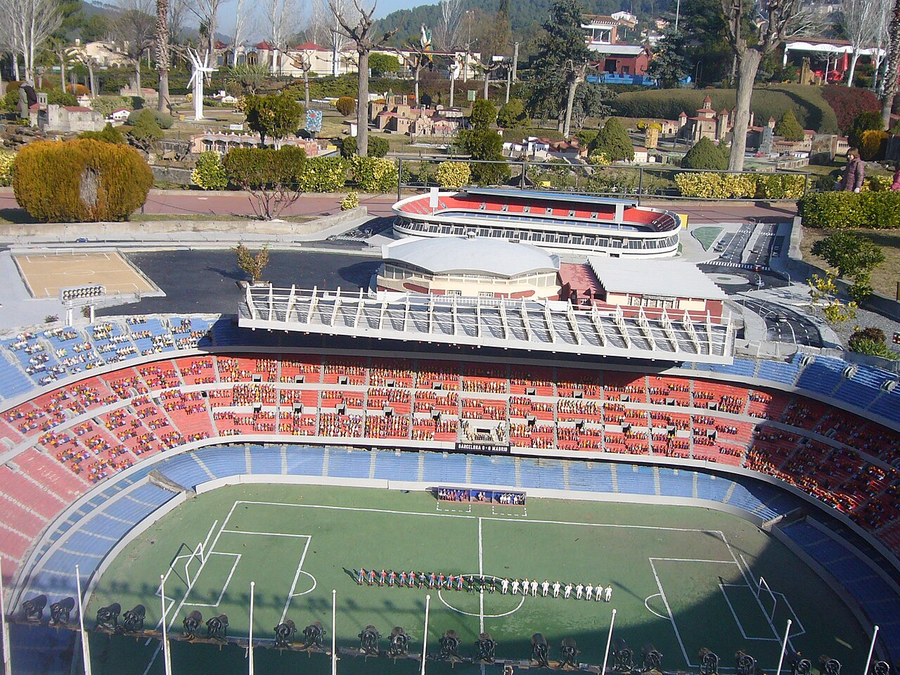

España!
20.II – 3.III.2020 · the four of us

from the plane?! no — the blimp
CAMP NOU · BARCELONA · FC 5 – 0 ·
22 FEB
2020
MADRID · 01 MAR 20
BERNABÉU · CLÁSICO · 2–0
THU 20
ORD → BCN. Leo slept the whole flight.
SAT 22
Camp Nou.
5–0.
One man scored four!
TUE 25
Train down the coast. Paella ×2.
FRI 28
AVE to Madrid, 300 km/h. Maya timed it.
SUN 1
El Clásico.
2–0 Madrid.
Dana sang.
TUE 3
Home. Nobody knew yet.
the last game before
the world went quiet.
Liga · Jornada 26
EL CLÁSICO
TRIBUNA · S.112 · F.9
0147